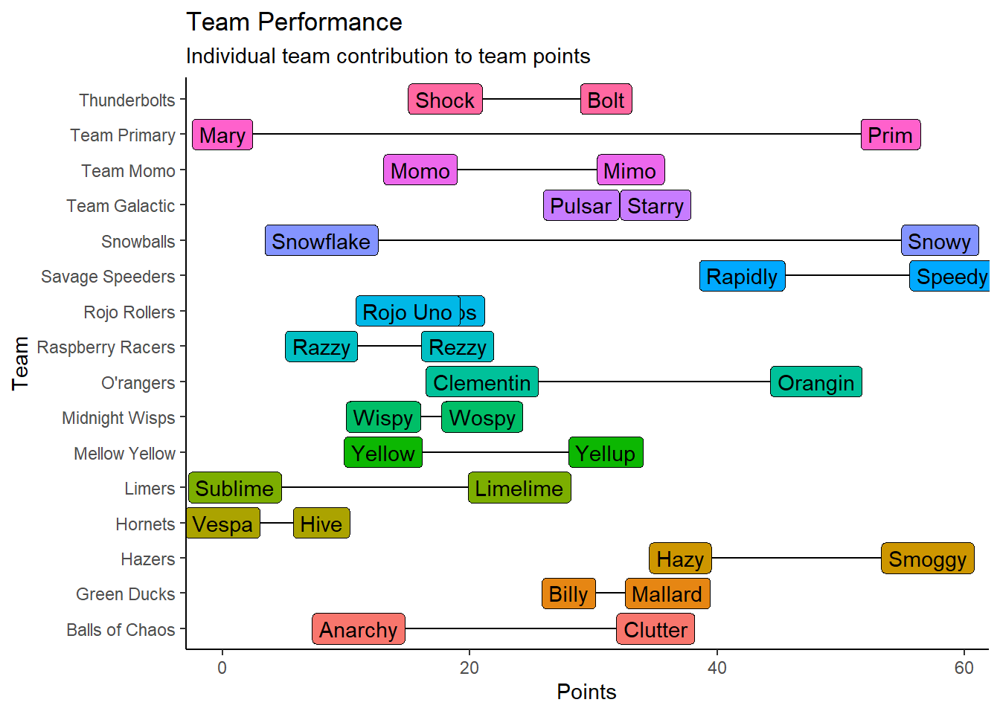
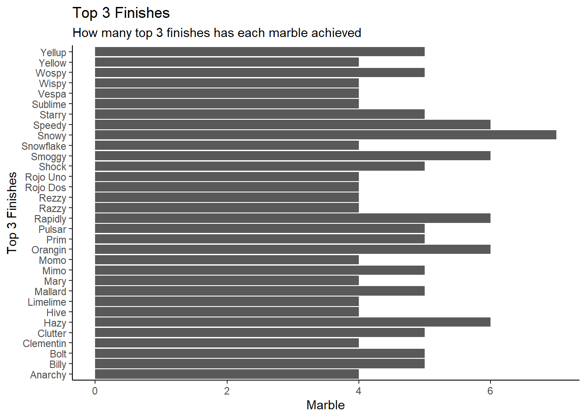
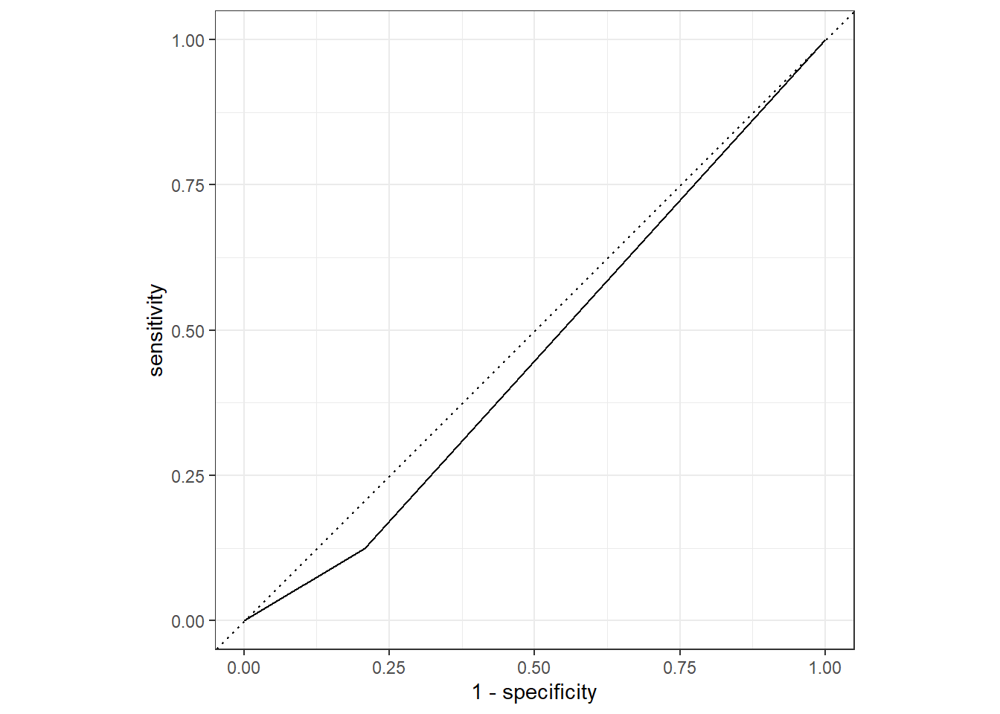

Tidy Tuesday 2
Marble Racing
Tidy Tuesday - June 2, 2020
In the early days of the pandemic when professional sports leagues stopped play to slow the spread of COVID-19, Marble Racing became temporary replacement, earning Jon Oliver’s endorsement on Last Week Tonight. While I’m sure there isn’t big money to be earned gambling on marble races, I think it would be possible to predict race outcomes strictly based on qualifying performance. To play it safe, I would likely bet on whether a marble gets first, second, or third place, so the target variable will be top_3 (yes or no).
Before beginning this exercise, one limitation I with this data set are the number of features and the number of observations. Additionally, some features will have to be dropped to prevent data leakage. For example, I don’t want to include the place each marble finished in a race as a predictor of whether it finished in the Top 3.
In this Tidy Tuesday project, I’m going to wrangle the marble data set to include final place, explore the data to see if there is a trend, and build four models in an effort to find the best fit.
## Rows: 256 Columns: 14## -- Column specification --------------------------------------------------------
## Delimiter: ","
## chr (9): date, race, site, source, marble_name, team_name, pole, host, notes
## dbl (5): time_s, points, track_length_m, number_laps, avg_time_lap##
## i Use `spec()` to retrieve the full column specification for this data.
## i Specify the column types or set `show_col_types = FALSE` to quiet this message.Let’s learn more about the marble league. Which are the highest-performing marbles? Teams? What are the tracks like?
marble_points <- marbles %>%
select(marble_name,team_name,points) %>%
drop_na(points) %>%
group_by(marble_name) %>%
summarise(team_name,
total = sum(points)) %>%
arrange(desc(total)) %>%
unique()## `summarise()` has grouped output by 'marble_name'. You can override using the `.groups` argument.rmarkdown::paged_table(marble_points) team_points <- marbles %>%
select(team_name,points) %>%
drop_na(points) %>%
group_by(team_name) %>%
summarise(total = sum(points)) %>%
arrange(desc(total))
rmarkdown::paged_table(team_points)How fast is each track?
tracks <- marbles %>%
select(site,track_length_m,avg_time_lap) %>%
drop_na() %>%
group_by(site) %>%
summarize(Length = track_length_m,
`Average Speed (seconds)` = mean(avg_time_lap)) %>%
arrange(desc(`Average Speed (seconds)`)) %>%
unique()## `summarise()` has grouped output by 'site'. You can override using the `.groups` argument.rmarkdown::paged_table(tracks) race_results <- # dataframe to see race results only
marbles %>% drop_na(points)
#create a variable for finishing place
place <- rep(1:16,8)
race_results$place <- place
qualifiers <- marbles %>% filter(grepl("Q",marbles$race)) #dataframe to see qualifier results only
qualifiers$place <- qualifiers$pole #add pole place to the place variable
qualifiers$place <- as.numeric(str_remove(qualifiers$place,"P"))
marbles2 <- bind_rows(race_results, qualifiers) # put tables together to have one variable for the final place
marbles2$type <- ifelse(grepl("Q",marbles2$race),"qualifier","race") # create a variable that indicates if it's a qualifier or a race
marbles2$race <- as.character(marbles2$race)
marbles2$event <- substr(marbles2$race,4,4)marbles_race <- marbles2 %>% filter(type == "race") %>%
select(-date,-race,-pole,-points, -type)#trying to get one variable with the qualifying time, qualifying place, race time, race place
marbles_qual <- marbles2 %>% filter(type == "qualifier")%>%
select(-date,-race,-pole,-points, -type)
marbles_race <- marbles_race %>% rename("race_place" = place)
marbles_race <- marbles_race %>% rename("race_time" = time_s)
marbles_race <- marbles_race %>% rename("race_laps" = number_laps)
marbles_qual <- marbles_qual %>% rename("qual_place" = place)
marbles_qual <- marbles_qual %>% rename("qual_time" = time_s)
marbles_qual <- marbles_qual %>% rename("qual_laps" = number_laps)
marbles_qual <- marbles_qual %>% select(event,marble_name, qual_time, qual_place, qual_laps)
# join on event and marble name
marbles3 <- full_join(marbles_race,marbles_qual, by = c("event", "marble_name")) # this dataset will enable me to use qualifying place as a variable for each corresponding race
# race_place should be a factor to fit into a logistic model
marbles3$race_place <- as.factor(marbles3$race_place)
marbles3$top_3 <- as.factor(ifelse(marbles3$race_place == 1 |marbles3$race_place == 2 | marbles3$race_place == 3,
1,0))
gg_marb <- marbles3
gg_marb$top_3 <- as.numeric(gg_marb$top_3)
m4 <- marbles3 %>% select(-race_place,-race_time,-avg_time_lap, -event, -qual_laps) #get rid of variables that would cause data leak and variables that aren't relavent to prediction. Looking at the top finishers for each event, it’s unlikely for the winner of each qualifying event to win the corresponding race. However, it is possible that
marbles2 %>%
filter(place == 1)%>%
ggplot(aes(x=event,y=type, label=marble_name))+
geom_point()+
geom_label(aes(fill = team_name))+
labs(title = "Are top qualifiers most likely to win?",
subtitle = "Top finishers for each qualifier and race",
x = "Race",
y = "")+
theme_classic()+
theme(legend.position = "none")
How did individual teammate performances compare? Looking at this graphic helps to show roughly which individual marbles finish consistently high and which finish consistently low.
# inspiration from @joepope44 https://twitter.com/joepope44/status/1268727311450472448
marble_points %>%
ggplot(aes(x=total, y=team_name, label = marble_name))+ # try sorting y axis based on season performance
geom_point() +
geom_line() +
geom_label(aes(fill = team_name))+
labs(title = "Team Performance",
subtitle = "Individual team contribution to team points",
x = "Points", y = "Team")+
theme_classic()+
theme(legend.position = "none")
Who has the most top 3 finishes? Looks like Snowy, Speedy, Smoggy, Rapidly, Orangin, and Hazy have the greatest number of top 3 finishes.
gg_marb %>% ggplot(aes(x = marble_name, y = top_3))+
geom_col()+
coord_flip()+
theme_classic()+
labs(title = "Top 3 Finishes",
subtitle = "How many top 3 finishes has each marble achieved",
x = "Top 3 Finishes", y = "Marble")
# Start building a model
p_load(tidymodels)
set.seed(123)
data_split <- initial_split(m4, prop = 3/4)
train_data <- training(data_split)
test_data <- testing(data_split)
m_rec <- recipe(top_3 ~ ., data = train_data)%>%
step_dummy(all_nominal_predictors())lr_mod <-
logistic_reg() %>%
set_engine("glm")
m_wf <- workflow() %>%
add_model(lr_mod) %>%
add_recipe(m_rec)
m_fit <-
m_wf %>%
fit(data = train_data)## Warning: There are new levels in a factor: NAtidy(m_fit) #will throw a warning## # A tibble: 68 x 5
## term estimate std.error statistic p.value
## <chr> <dbl> <dbl> <dbl> <dbl>
## 1 (Intercept) -895. 1885598. -0.000475 1.00
## 2 track_length_m 112. 247522. 0.000452 1.00
## 3 race_laps NA NA NA NA
## 4 qual_time -23.9 57044. -0.000419 1.00
## 5 qual_place NA NA NA NA
## 6 site_Hivedrive NA NA NA NA
## 7 site_Midnight.Bay NA NA NA NA
## 8 site_Momotorway NA NA NA NA
## 9 site_O.raceway NA NA NA NA
## 10 site_Razzway NA NA NA NA
## # ... with 58 more rowspredict(m_fit,test_data) #will throw a warning## # A tibble: 32 x 1
## .pred_class
## <fct>
## 1 0
## 2 0
## 3 0
## 4 0
## 5 0
## 6 0
## 7 0
## 8 0
## 9 0
## 10 0
## # ... with 22 more rowsm_aug <- augment(m_fit,test_data)
m_aug %>%
select(qual_place,top_3,.pred_class)## # A tibble: 32 x 3
## qual_place top_3 .pred_class
## <dbl> <fct> <fct>
## 1 2 1 0
## 2 9 1 0
## 3 15 0 0
## 4 5 1 0
## 5 6 1 0
## 6 2 1 0
## 7 4 0 0
## 8 3 0 0
## 9 12 0 0
## 10 2 1 0
## # ... with 22 more rowsm_aug$.pred_class <- as.numeric(m_aug$.pred_class,event_level= "second")m_aug %>%
roc_curve(truth = top_3, .pred_class, event_level= "second") %>%
autoplot()
m_aug %>% roc_auc(truth = top_3, .pred_class, event_level = "second")## # A tibble: 1 x 3
## .metric .estimator .estimate
## <chr> <chr> <dbl>
## 1 roc_auc binary 0.458This model does not quite predict results very well, however, it did to better than I hoped. Next, I’ll try to see how it does with retraining. A LASSO or ridge regression model is probably going to be my final choice because there are fewer features in this data set. I’ll start with a decision tree and then I’ll try a random forest. I’ll continue to use the same data split and recipe.
folds <- vfold_cv(train_data, v = 5, repeats = 5, strata = top_3)
tree_grid <- grid_regular(cost_complexity(),
tree_depth(),
levels = 5)
mtree_wf <- workflow() %>%
add_model(lr_mod) %>%
add_recipe(m_rec)
m_tree_res <- mtree_wf %>%
tune_grid(resamples = folds,
grid = tree_grid)
m_tree_res %>%
collect_metrics()## # A tibble: 2 x 6
## .metric .estimator mean n std_err .config
## <chr> <chr> <dbl> <int> <dbl> <chr>
## 1 accuracy binary 0.707 22 0.0356 Preprocessor1_Model1
## 2 roc_auc binary 0.573 22 0.0413 Preprocessor1_Model1m_tree_res %>%
show_best("roc_auc", event_level = "second")## # A tibble: 1 x 6
## .metric .estimator mean n std_err .config
## <chr> <chr> <dbl> <int> <dbl> <chr>
## 1 roc_auc binary 0.573 22 0.0413 Preprocessor1_Model1# select best roc_auc
best_model <- m_tree_res %>%
select_best("roc_auc")
final_wf <- mtree_wf %>%
finalize_workflow(best_model)
final_fit <- final_wf %>%
last_fit(data_split)
final_fit[[5]][[1]]$.pred_class <- as.numeric(final_fit[[5]][[1]]$.pred_class)
final_fit %>%
collect_predictions() %>%
roc_curve(top_3, .pred_class, event_level="second") %>%
autoplot()final_fit %>%
collect_predictions() %>%
roc_auc(top_3, .pred_class, event_level = "second")## # A tibble: 1 x 3
## .metric .estimator .estimate
## <chr> <chr> <dbl>
## 1 roc_auc binary 0.458The tree model has the same roc_auc value as the previous model. Next, I tried to build a random forest, but my code did not cooperate and threw an error. After this I opted for LASSO and Ridge Regression models.
# this section uses the same data split and vfold cross-validation as the previous models
#val_set <- validation_split(train_data,
#strata = top_3,
#prop = 8/10)
#cores <- parallel::detectCores()
#rf_marb <- rand_forest(mtry = tune(), min_n = tune(), trees = 1000) %>%
# set_engine("ranger", num.threads = cores) %>%
# set_mode("classification")
#rf_marb_wf <- workflow() %>%
# add_model(rf_marb) %>%
# add_recipe(m_rec)#tune grid
#rf_res <- rf_marb_wf %>%
# tune_grid(val_set,
# grid = 25,
# control = control_grid(save_pred = TRUE),
# metrics = metric_set(roc_auc))#rf_best <- rf_res %>%
# select_best(metric = "roc_auc")
#rf_best
#rf_auc <-
#rf_res %>%
#collect_predictions(parameters = rf_best) %>%
#roc_curve(top_3, .pred_1) %>%
#mutate(model = "Random Forest")
#rf_auc#Looking at the results from the random forest, it seems that this was not a good model. In fact, the performance of the previous models seems to be better.
#rf_auc %>%
#ggplot(aes(x = 1 - specificity, y = sensitivity, col = model)) +
#geom_path() +
#geom_abline() +
#coord_equal()Create LASSO model
# LASSO
# continue using same data split and model engine
lasso_wf <-
workflow() %>%
add_model(lr_mod) %>%
add_recipe(m_rec)
lasso_grid <- tibble(penalty = 10^seq(-4, -1, length.out = 30))
lasso_res <- # this will throw a warning
lasso_wf %>%
tune_grid(folds,
grid = lasso_grid,
control = control_grid(save_pred = TRUE),
metrics = metric_set(roc_auc))Evaluate Lasso model. The best LASSO model results in a roc_auc value of .51. This is a better result than .46 roc auc value from the decision tree, but still not quite accurate enough.
lasso_res %>%
show_best("roc_auc")## # A tibble: 1 x 6
## .metric .estimator mean n std_err .config
## <chr> <chr> <dbl> <int> <dbl> <chr>
## 1 roc_auc binary 0.573 22 0.0413 Preprocessor1_Model1# select best
lasso_best <- lasso_res %>%
select_best("roc_auc")
lasso_best## # A tibble: 1 x 1
## .config
## <chr>
## 1 Preprocessor1_Model1# finalize workflow
final_lasso_wf <-
lasso_wf %>%
finalize_workflow(lasso_best)
# final fit with split data
final_lasso_fit <- final_lasso_wf %>%
last_fit(data_split)## ! train/test split: preprocessor 1/1: There are new levels in a factor: NA## ! train/test split: preprocessor 1/1, model 1/1 (predictions): There are new levels in a fac...final_lasso_fit %>%
collect_metrics()## # A tibble: 2 x 4
## .metric .estimator .estimate .config
## <chr> <chr> <dbl> <chr>
## 1 accuracy binary 0.625 Preprocessor1_Model1
## 2 roc_auc binary 0.453 Preprocessor1_Model1At the beginning of this page, I addressed the fact that there is very little data here. Considering I’m trying to use qualification data to predict race outcomes, there are only 128 observations. Thinking about this problem, I though that a ridge regression model might improve performance a bit.
# using the same data split from earlier
r_grid <- tibble(penalty = 10^seq(-4, -1, length.out = 30))
ridge_reg <- logistic_reg(
mode = "classification",
engine = "glm",
mixture = 0) #setting mixture to 0 indicates a ridge regression is being used
r_wf <-
workflow() %>%
add_model(ridge_reg) %>%
add_recipe(m_rec)
r_res <- # this will throw a warning saying there are no tuning parameters
r_wf %>%
tune_grid(folds,
grid = r_grid,
control = control_grid(save_pred = TRUE),
metrics = metric_set(roc_auc))r_res %>%
show_best("roc_auc", event_level = "second")## # A tibble: 1 x 6
## .metric .estimator mean n std_err .config
## <chr> <chr> <dbl> <int> <dbl> <chr>
## 1 roc_auc binary 0.573 22 0.0413 Preprocessor1_Model1# select best
r_best <- r_res %>%
select_best("roc_auc", event_level = "second")
r_best## # A tibble: 1 x 1
## .config
## <chr>
## 1 Preprocessor1_Model1# finalize workflow
final_r_wf <-
r_wf %>%
finalize_workflow(r_best)
# final fit with split data
final_r_fit <- final_r_wf %>%
last_fit(data_split)## ! train/test split: preprocessor 1/1: There are new levels in a factor: NA## ! train/test split: preprocessor 1/1, model 1/1 (predictions): There are new levels in a fac...final_r_fit %>%
collect_metrics()## # A tibble: 2 x 4
## .metric .estimator .estimate .config
## <chr> <chr> <dbl> <chr>
## 1 accuracy binary 0.625 Preprocessor1_Model1
## 2 roc_auc binary 0.453 Preprocessor1_Model1In conclusion, LASSO and Ridge regressions were the best of all the models used. However, with a ROC-AUC value of just .45 for each and an accuracy of 62%, they still isn’t strong enough of a model to be useful in predicting the top three finishers in the marble races. At least, this isn’t something I would rely on if I were putting money on these races.
More than anything else, this model would be strengthened by a greater number of observations and perhaps a greater number of variables. With just 128 observations and 8 predictor variables, it is difficult to get accurate results.